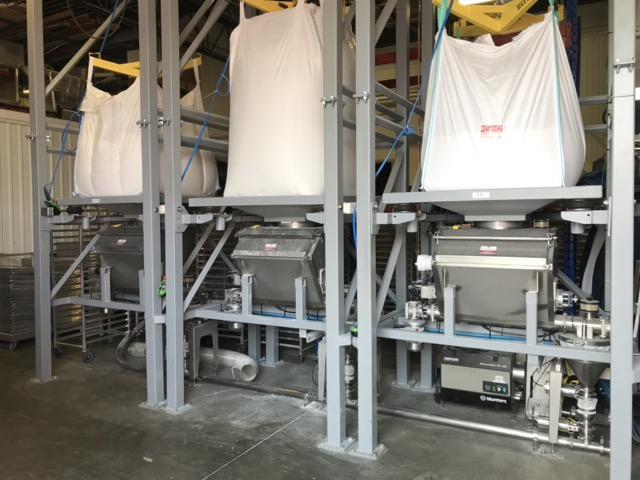
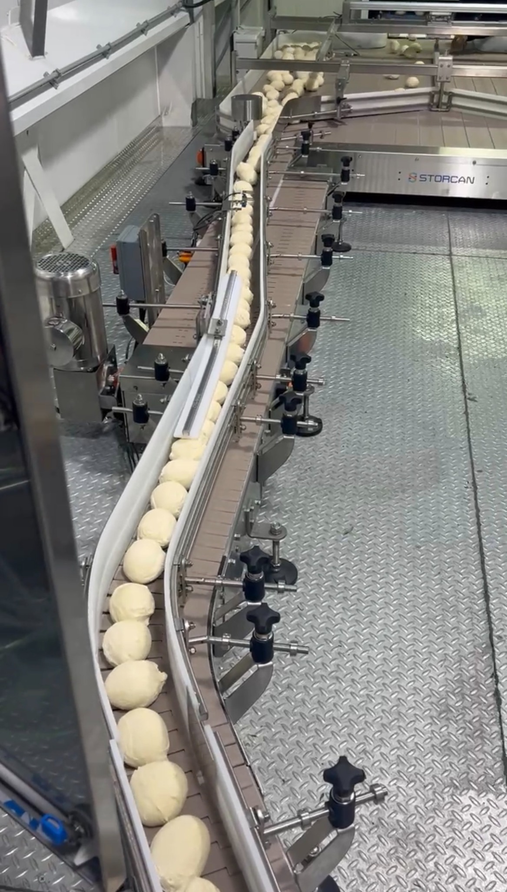
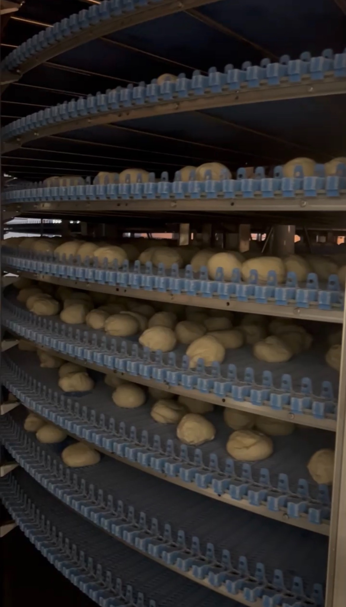
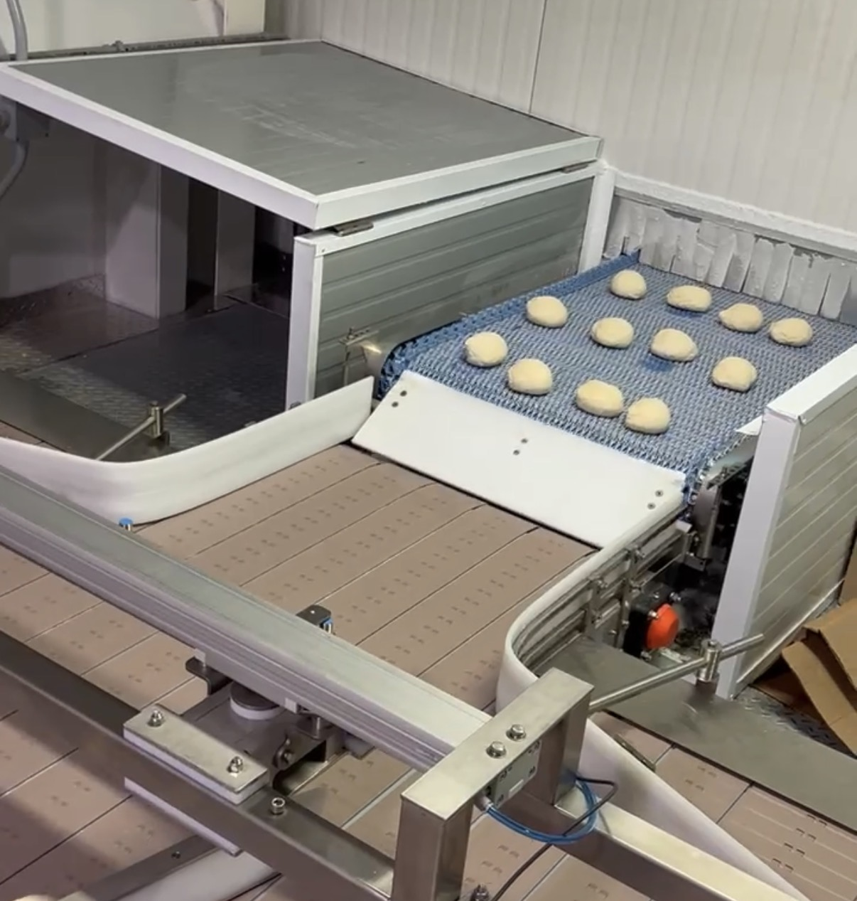
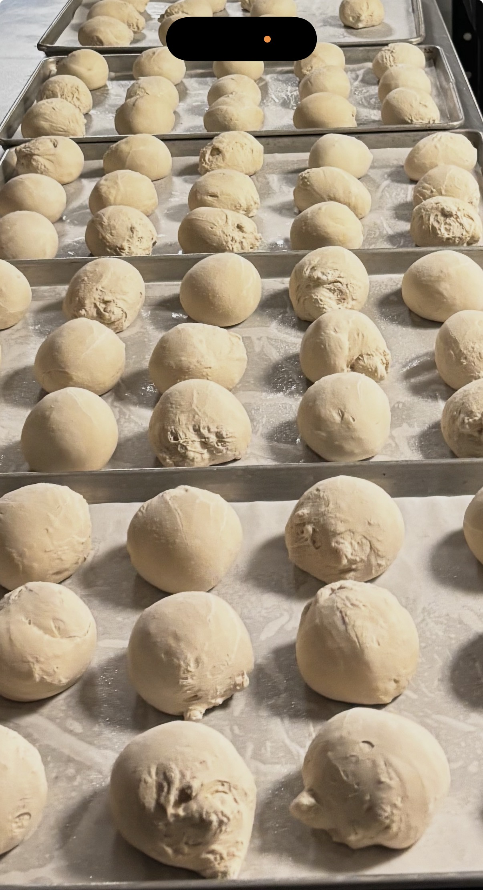
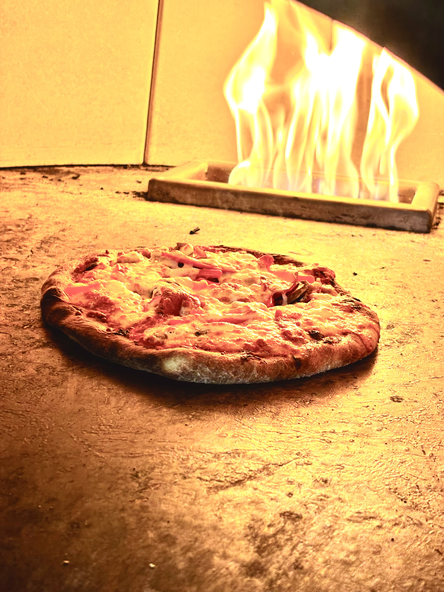
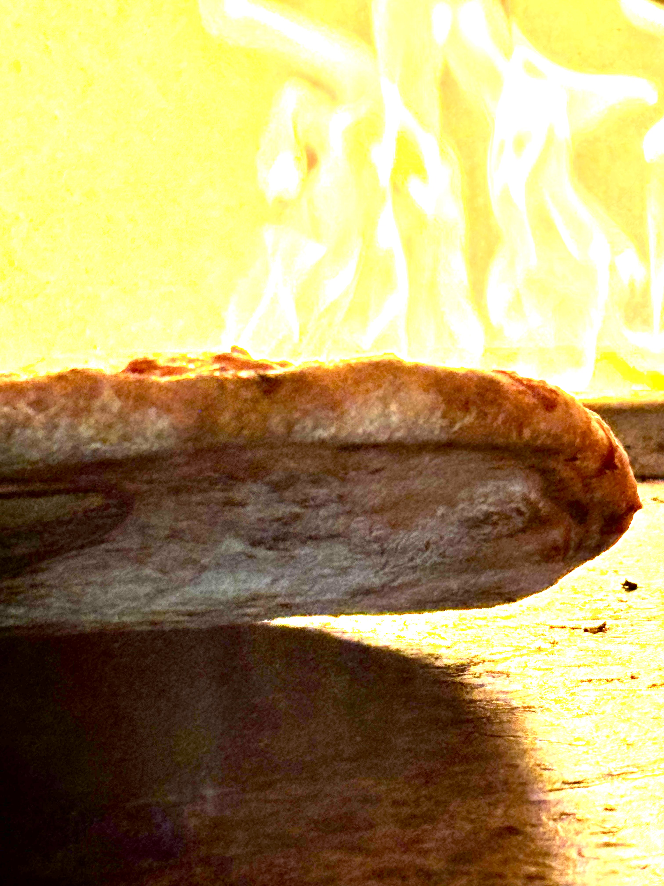

Gourmet Flash-Frozen Italian Pizza Dough Balls
Review the Forno Medici product lineup, packaging format, case information, and visual presentation designed for professional foodservice programs.
Developed for practical kitchen execution
Forno Medici dough balls are produced to support organized prep, controlled handling, and consistent finished results. The format is designed to work well across independent pizzerias, hospitality kitchens, institutional dining, and broader foodservice operations.


Product format, production, and finished application
A visual overview of dough ball presentation, manufacturing flow, and finished pizza application in professional kitchen environments.








Adaptable across a wide range of foodservice formats.
The Forno Medici line is built to support operators who need a dough program that can fit different menu styles, service volumes, and kitchen workflows without unnecessary complexity.
Available sizes and pack configuration
| Product Code | Unit Weight | Units / Case | Case Weight |
|---|---|---|---|
| 77100 | 100g (3.5 oz) | 90 | 16.85 lb |
| 77170 | 170g (6 oz) | 60 | 22.5 lb |
| 77227 | 227g (8 oz) | 48 | 24 lb |
| 77283 | 283g (10 oz) | 36 | 22.5 lb |
| 77340 | 340g (12 oz) | 30 | 22.5 lb |
| 77396 | 396g (14 oz) | 24 | 21 lb |
| 77454 | 454g (16 oz) | 24 | 24 lb |
| 77567 | 567g (20 oz) | 15 | 18.75 lb |
| 77737 | 737g (26 oz) | 14 | 22.5 lb |
| 77907 | 907g (32 oz) | 12 | 24 lb |
Request samples, specifications, or a sell sheet
Connect with our team for case information, product guidance, sample requests, and sales support.